Independent literary fiction
Stories about systems,
institutions, and the people inside them.
Residuum Press publishes the fiction of Wesley F. Black: compressed literary novels, civic procedurals, dystopian novellas, and the connected works of the Residuum universe.
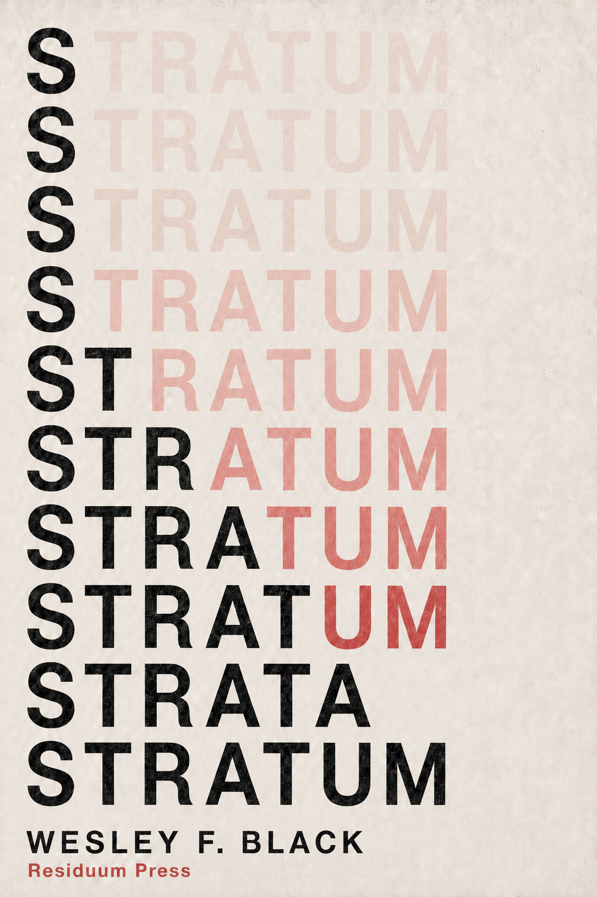
Literary fiction
Systems fiction
Civic procedural
Residuum universe
The catalog
Books
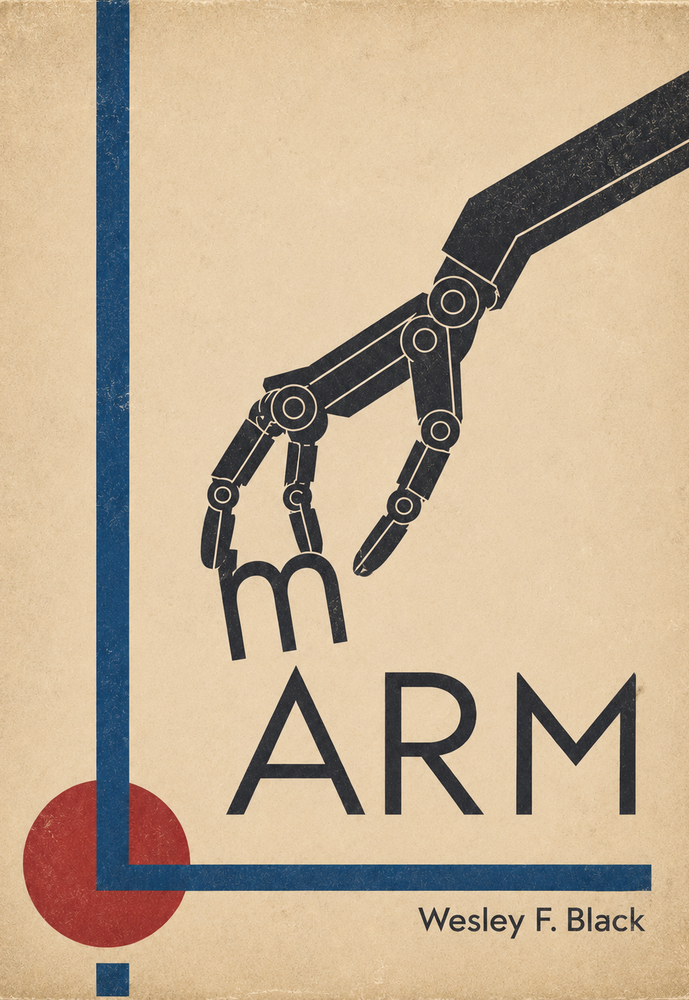
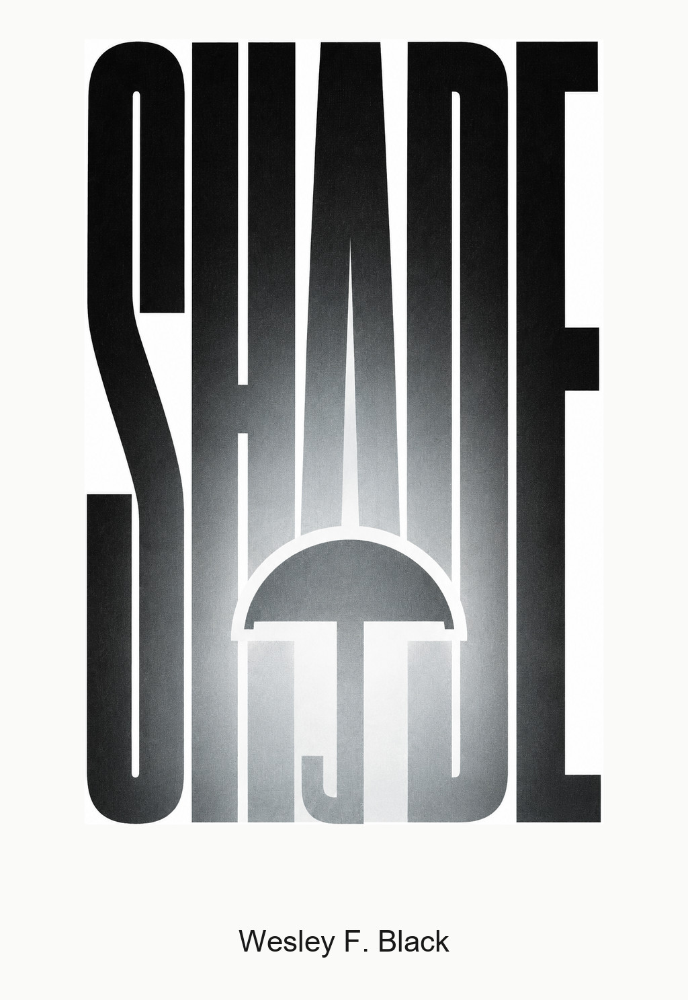
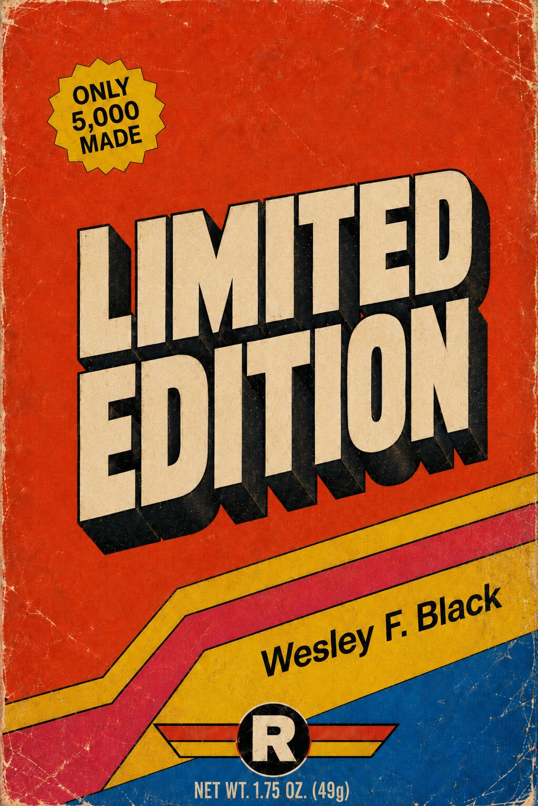
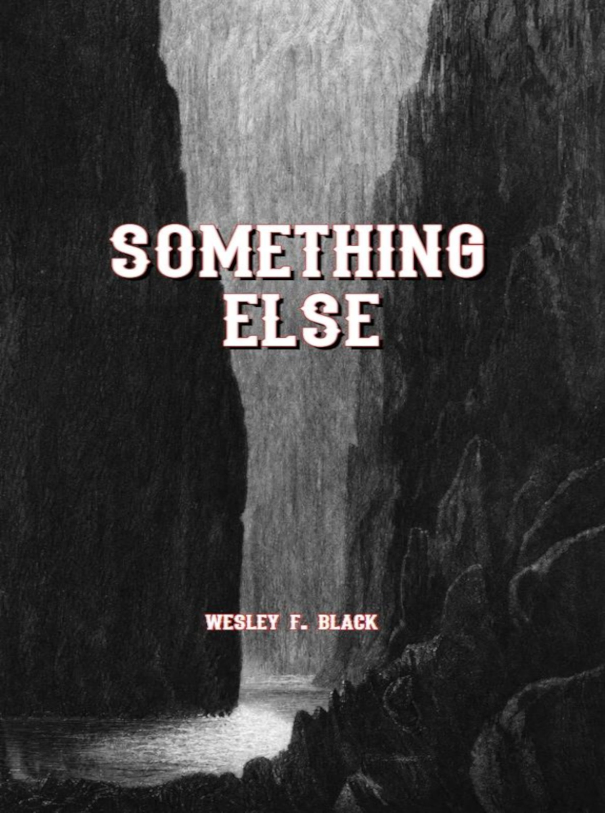
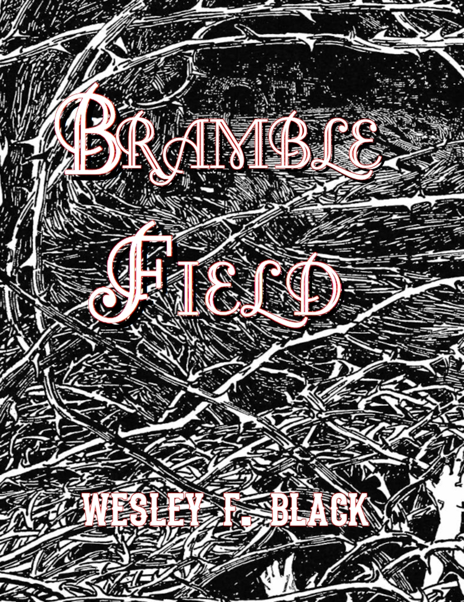
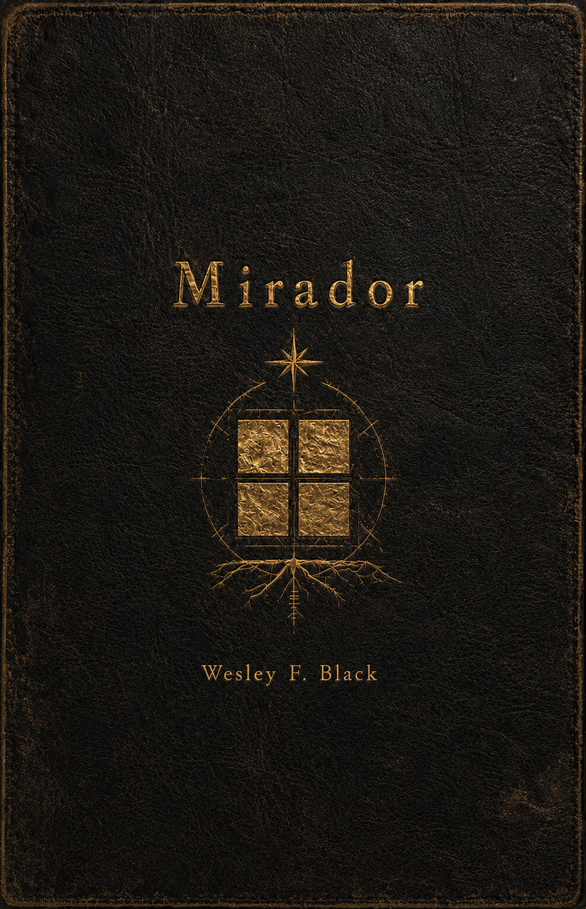
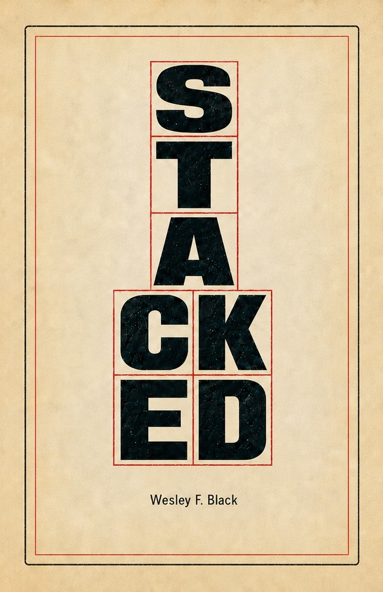

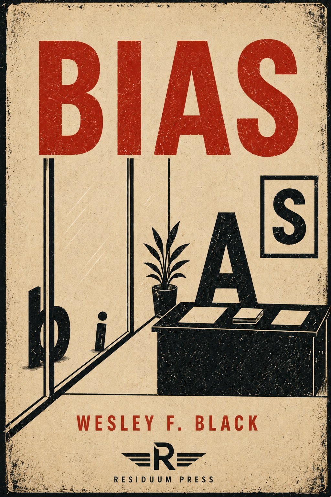
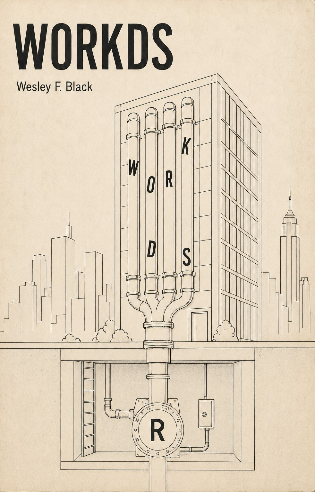
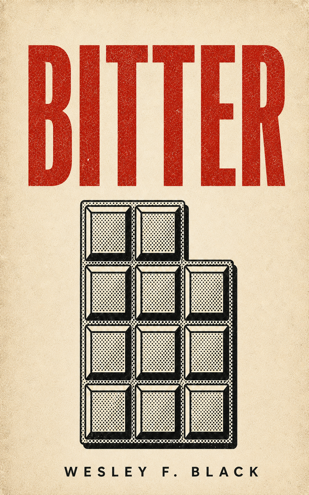
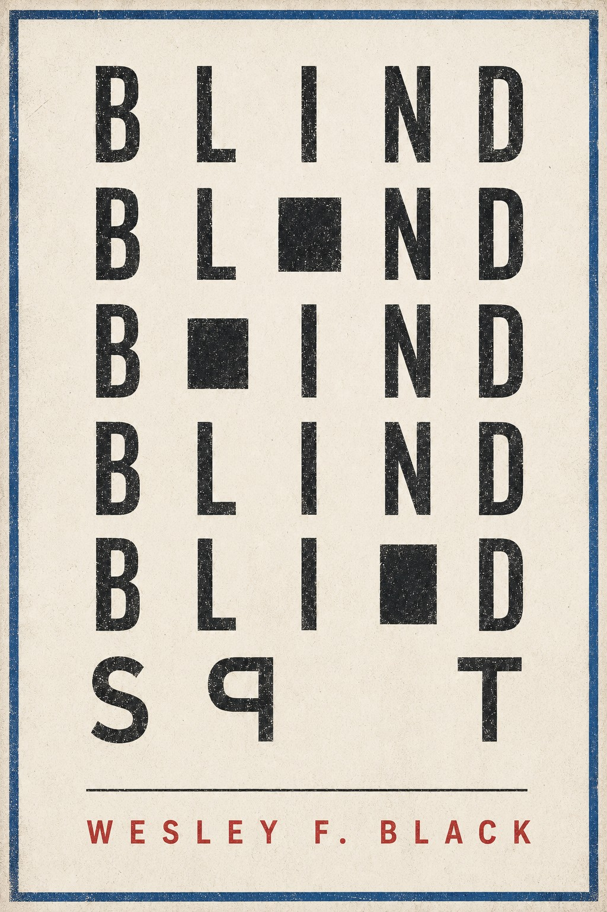
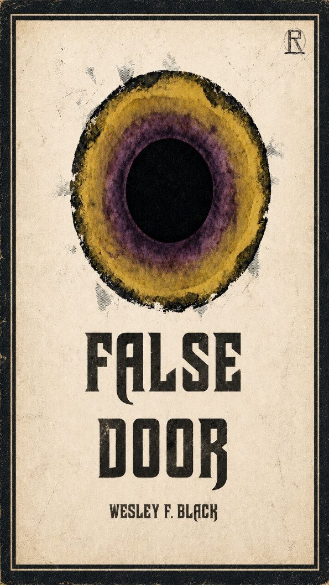
Connected works
The Residuum Universe
A public canon archive records the official reading order, the FREBT matrix, preservation notes, and the connected works of the Residuum universe.
Bramble Field → False Door → Stacked → Reckon → Limited Edition → Mirador
Open the public universe bible →About the author
Wesley F. Black
Wesley F. Black writes restrained literary fiction about technology, bureaucracy, labor, housing, care, and the ordinary human consequences of systems that appear to be working correctly.